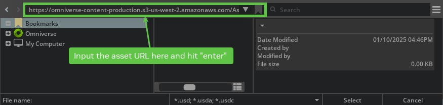

已知问题#
常规更新#
在某些 Windows 系统上，您可能会遇到如下错误：
OSError: [WinError 126] The specified module could not be found. Error loading "C:\path\to\omni.isaac.ml_archive\pip_prebundle\torch\lib\fbgemm.dll" or one of its dependencies.
此问题是由缺少构建工具引起的。要解决此问题，请安装 Visual Studio 2022，然后通过 Visual Studio 界面安装
MSVC v143 - VS 2022 c++ x64/86 build tools。当在 world 使用的 stage 上调用 Scatter3D OmniGraph 节点时，该 replicator 节点会破坏物理效果。
如果使用
Ctrl-C退出独立 Python 脚本，可能需要执行两次才能退出。如果 URDF 中的多个资产包含相同的材质名称，则只会创建一个材质，即使材质参数不同也是如此。例如，如果两个网格具有名为 “material” 的材质，一个为蓝色，另一个为红色，则这两个网格将全部变为红色或全部变为蓝色。这也适用于带纹理的材质。
在 OmniGraph 中使用
isaacsim.core.api中的World或SimulationContext时，请确保在初始化 World 或 SimulationContext 之前创建图。使用 replicator 的
rep.new_layer()功能（该功能会创建一个新图层，用于放置和随机化资产）可能会导致在这些资产被使用的模拟场景中出现问题。在这种情况下，可以省略rep.new_layer()的使用。在 OmniGraph 节点中拖放具有默认值的资产后，应将其与场景一起保存，并在点击
Play之前重新加载，以确保所有值均已正确设置。如果运行 FPS 低于 25 FPS，带有 ROS 同步功能的 Cortex 示例可能会出现异常行为，并且无法执行任务。
如果用于合成数据生成的随机化材质未能及时加载，则必须将 rt_subframes 设置为至少 2。
Multiple Robot ROS 2 Navigation 教程具有较高的 CPU 使用率。如果您观察到机器人实例发生碰撞或出现定位问题，这很可能是因为 Nav2 堆栈无法与传感器数据正确同步，从而导致控制器命令丢失。
在运行 Isaac Sim 时，可能会出现许多警告和其他消息。可以使用以下命令行参数来减少日志输出量：
--/log/level=error --/log/fileLogLevel=error --/log/outputStreamLevel=error
在 Windows 上使用 Replicator 通过内置后端写入 S3 存储桶时，可能需要通过环境变量而不是 AWS 配置文件来设置凭据。这是因为 boto3 在 Windows 上可能存在路径解析错误。
在 Windows 上运行独立示例时，在某些场景下，应用程序关闭时线程可能无法被正确清理。这通常可以忽略，因为应用程序仍会成功关闭。作为变通方法，可以在调用
standalone_app.close()之前添加多个standalone_app.update()调用。Windows fatal exception: access violation Thread 0x00000634 (most recent call first):
ROS 2 QoS Profile OmniGraph 节点无法保存自定义配置文件，除非您先手动将 createProfile 输入更改为“Custom”，然后再更新其他字段。
在 ROS 2 关节名称覆盖解析不支持
IsaacJointAPIisaac:NameOverride的构建版本中，自定义关节名称可能不会出现在/joint_states上，或者可能无法通过 Isaac Joint Name Resolver 节点解析。请使用已编写的 USD 关节 prim 名称进行控制，或者仅作为临时的旧版兼容性变通方法，在受影响的关节 prim 上编写isaac:nameOverride。新的关节资产应继续使用IsaacJointAPIisaac:NameOverride。请将小写的isaac:nameOverride保留用于非关节 prim 和旧版兼容性。请参阅 NameOverride Attribute。- USD 到 URDF 导出器：
碰撞体网格可能被错误地包含在视觉元素中。可以从 URDF 文件中手动移除它们。
Body 和 Joints 在 URDF 文件中按字母顺序编写。可以在 URDF 文件中手动重新排序。
根据机器人结构，由于不同帧的合并，某些 body 名称可能会被覆盖。请检查输出并验证其准确性。
当无界时，URDF 导出器会将关节的 effort 和 velocity 限制添加为 inf。如果 URDF 解析器不支持 Float 中的 inf 值，这可能导致 URDF 无法正确导入。
Isaac Sim 资产路径不能直接用于 Omniverse Kit 文件选择器对话框。作为变通方法，当在 Omniverse Kit 文件选择器中使用 S3 资产路径时，请复制并粘贴该路径，然后按
enter而不是点击 Select。
对于具有显著变化的场景（例如移动物体或变化的光照条件），Replicator 合成数据生成可能需要渲染更多的子帧。有关更多信息，请参阅 RT Subframes Parameter 和 subframes examples。
Franka Open Drawer 示例在 Blackwell GPU 上默认无法打开抽屉，将
self._physics_rate增加到 600 即可正常工作。该问题目前正在调查中。在独立模式下运行时，Replicator
CosmosWriter可能会跳过从录制帧生成视频。在这种情况下，请在分离写入器之前运行几次应用更新，以确保视频能够生成。在使用 Replicator 进行合成数据生成 (SDG) 工作流时，建议将 DLSS 模型设置为 Quality 模式以避免渲染伪影。在较低分辨率下（尤其是低于 600x600 时），默认的 Performance 模式可能会导致生成的图像中出现透明或渲染错误的边缘等问题。
import carb.settings # Set DLSS to Quality mode (2) for best SDG results (Options: 0 (Performance), 1 (Balanced), 2 (Quality), 3 (Auto) carb.settings.get_settings().set("/rtx/post/dlss/execMode", 2)
从 Isaac Sim 5.0 开始，完整的 Isaac Sim 体验（
isaacsim.exp.full.kit）默认启用 Fixed Time Stepping，以便SimulationApp工作流能够确定性地步进时间轴。作为副作用，包含关键帧动画且渲染速率低于目标速率（通常为 60 Hz）的 USD 场景在 GUI 中会显得缓慢或卡顿，因为时间轴在每个循环刻度上按固定的dt推进，而不是按实际时间推进。在 USD Composer 和 Isaac Sim 4.5 中，这些场景可以平滑播放，因为它们使用 Variable stepping。若要在动画审查/编辑时让 GUI 使用 Variable stepping，请使用以下三个标志启动（第三个标志可防止isaacsim.core.throttling扩展在每次 Play 时重新启用手动模式）；有关完整讨论，请参阅 Choppy or Slow Animation Playback (Fixed Time Stepping)。./isaac-sim.sh \ --/app/player/useFixedTimeStepping=false \ --/app/runLoops/main/manualModeEnabled=false \ --/exts/isaacsim.core.throttling/enable_manualmode=false
DL 降噪器（DLSS 光线重建）可能会在简单场景中的材质上留下白噪声斑点，例如在物体重建资产 SDG 示例中的紫色地板上。禁用
/rtx/dldenoiser/responsiveDenoising以切换到另一个时间稳定性更好的 RR 模型；降噪器保持启用状态。禁用它可能会引入重影；对于随机化材质的 SDG，请等待额外的子帧或重置 DLSS 历史记录。请参阅使用 DL 降噪器时材质上的白噪声。import carb.settings carb.settings.get_settings().set("/rtx/dldenoiser/responsiveDenoising", False)
在 Isaac Sim 6.0 和 6.1 中，RTX Lidar 的
echoId字段始终为0，即使对于每个发射光线报告多个回波的多回波 Lidar 配置文件也是如此。这会影响GenericModelOutput缓冲区以及所有转发该字段的消费者，包括 RTX 传感器标注器和 ROS 2 点云发布者。其他每个回波的字段（如 range 和 intensity）不受影响。目前没有变通方法；计划在后续版本中修复此问题。请参阅已知问题：RTX Lidar 的 echoId 始终为零。在渲染开始后重命名或重新设置渲染产品（render product）或其祖先 prim 的父级，可能会导致以下错误：
ValueError: Invalid object in Py_Graph in getWrappedGraphFromNode
为避免此错误，请在渲染开始前完成 prim 层级的最终确定。在渲染产品或其祖先 prim 开始渲染后，请勿重命名或重新设置其父级。
警告#
可以忽略类似于以下的警告：
[Warning] [omni.usd] Warning (secondary thread)[Warning] [carb.tasking.plugin] Counter 0x7f25e002f8d0[Warning] [rtx.neuraylib.plugin] [MDLC:COMPILER] 1.0 MDLC comp warn[Warning] [rtx.mdltranslator.plugin] Unable to resolve[Warning] [omni.tagging.plugin] Failed to discover tagging service[Warning] [omni.isaac.dynamic_control.plugin] DcFindArticulationDof: Function called while not simulating[Warning] [omni.isaac.dynamic_control.plugin] DcSetDofProperties: Function called while not simulating[Warning] [omni.client.plugin] Tick: authentication: Could not connect to discovery service at "wss://...
如果模拟的深度图像中存在不需要的噪声，请在 Render Settings > Ray Tracing > Anti-Aliasing 选项卡下禁用抗锯齿，方法是将
Algorithm设置为None。某些扩展使用 Pyperclip 来复制文本，如果您看到以下消息，请参考链接以安装受支持的复制/粘贴机制：
Pyperclip could not find a copy/paste mechanism for your system. For more information, see https://pyperclip.readthedocs.io/en/latest/index.html#not-implemented-error
如果您看到类似于以下的警告，可以忽略它们：
[Warning] [omni.client.python] Detected a blocking function. This will cause hitches or hangs in the UI. Please switch to the async version
请确保您可以访问互联网或 Nucleus 服务器。
错误#
如果客户端运行正常，则在运行 Omniverse Streaming Remote Client 时可以忽略以下错误：
ERROR [BifrostClient: Streamer] {2B436200} - updateVideoSettingsForNVbProfile: profile 8 is not handled ERROR [NVST:ClientSession] {1E8D2700} - Number of channels(2) is not valid for surround configuration ERROR [NVST:ClientSession] {1E8D2700} - Either in stereo or error in receiving opus information from server ERROR [LAVCDecoder] {FC4A0700} - GERONIMO_ERROR 0xC0040006 GERONIMO_LAVCDECODER_DECODE: Packet decode failure. ERROR [GIOInterface] {DAFFD700} - GERONIMO_ERROR 0xC0020003 GERONIMO_IOINTERFACE_INVALID_AUDIO_FUNC: Audio Renderer is NULL. ERROR [NVST:ClientLibraryWrapper] {1E8D2700} - Cannot find streamEventRaised for stream.media type 1 ERROR [NVST:ClientLibraryWrapper] {1E8D2700} - Cannot find streamEventRaised for stream.media type 2 ERROR [NVST:RtspSessionPocoBase] {FB280700} - perform() failed: 0 ERROR [NVST:RtspPocoEvent] {FB280700} - RTSP-XNvEvent Polling failed: 0, rc: 408 ERROR [NVST:UdpRtpSource] {F9A7D700} - UDP RTP Source: failed to receive data (Error: 0x80000013) ERROR [NVST:RtpSourceQueue] {F9A7D700} - RtpSourceQueue: failed to read RTP packet (Result: 0X80000013) ERROR [BifrostClient: NvscWrapper] {1D0CF700} - Received old frame - current 7536 received 0 ERROR [BifrostClient: Interface] {2B436200} - nvbSendInputEvent(). SessionIdentifier is ''
ERROR [Geronimo::Analytics] {875D4140} - Failed to load dll with error: /../..//NvTelemetryAPI.so: cannot open shared object file: No such file or directory ERROR [BifrostClient: Streamer] {875D4140} - updateVideoSettingsForNVbProfile: profile 8 is not handled ERROR [NVST:ClientSession] {7EC38640} - Number of channels(2) is not valid for surround configuration ERROR [NVST:ServerControl] {4BFFF640} - Unknown server notification ERROR [GIOInterface] {49FFB640} - GERONIMO_ERROR 0xC0020003 GERONIMO_IOINTERFACE_INVALID_AUDIO_FUNC: Audio Renderer is NULL. ERROR [NVST:ClientLibraryWrapper] {7EC38640} - Cannot find streamEventRaised for stream.media type 1 ERROR [NVST:ClientLibraryWrapper] {7EC38640} - Cannot find streamEventRaised for stream.media type 2 [h264 @ 0x55580065b160] Cannot parallelize slice decoding with deblocking filter type 1, decoding such frames in sequential order To parallelize slice decoding you need video encoded with disable_deblocking_filter_idc set to 2 (deblock only edges that do not cross slices). Setting the flags2 libavcodec option to +fast (-flags2 +fast) will disable deblocking across slices and enable parallel slice decoding but will generate non-standard-compliant output. ERROR [BifrostClient: Streamer] {875D4140} - Sending Input event failed: Nvsc Error: NVST_R_GENERIC_ERROR (0x800b0000)
在使用 Isaac core world 类时，当再次 STOPPING 和 STARTING simulation 时，会发生类似于以下的错误。要停止错误跟踪，请使用
world.reset方法之一重置场景（在核心示例中，这发生在按下 UI 上的 RESET 按钮时）。2021-06-01 19:16:51 [65,842ms] [Error] [omni.kit.app._impl] [py stderr]: AttributeError: 'NoneType' object has no attribute '<...>' At: <...>
如果资产包含 Action Graph，并且在重新打开同一资产之前关闭了 Action Graph 窗口，则可能会出现以下错误，这些错误可以忽略：
[Error] [omni.usd] TF_PYTHON_EXCEPTION (secondary thread): in TfPyConvertPythonExceptionToTfErrors at line 114 of /buildAgent/work/ca6c508eae419cf8/USD/pxr/base/tf/pyError.cpp -- Tf Python Exception [Error] [omni.kit.app.impl] [py stderr]: sys:1: RuntimeWarning: coroutine 'OmniGraphModel.__delayed_prim_changed' was never awaited RuntimeWarning: Enable tracemalloc to get the object allocation traceback [Error] [omni.graph] Invalid GraphObj object in Py_Graph in getNode
在转换 ShapeNet 模型时，如果输入数据集中缺少目标模型的纹理，
omni.kit.asset_converter扩展可能会报告错误。这些错误可以忽略。[Error] [omni.kit.asset_converter.impl.omni_client_wrapper] Cannot copy from */images/texture2.jpg to */textures/texture2.jpg, error code: Result.ERROR_NOT_FOUND.
直播流式传输时的错误。这些错误可以忽略。
[Error] [carb.livestream.plugin] nvstPushStreamData timeout for eye 0, stream (nil). [Error] [omni.kit.livestream.webrtc.plugin] NVST Error: NVST_R_FRAME_DROPPED [Error] [omni.kit.livestream.webrtc.plugin] NVST Error: NVST_R_BUSY
如果流保持连接且可交互，则无需对这些消息采取行动。 在断开一个 WebRTC 客户端并重新连接另一个客户端时，可能会出现
NVST_R_BUSY； 请在重新连接之前关闭现有的客户端会话或重新加载基于浏览器的查看器。使用 Jupyter notebook 时出现的错误。这些错误可以忽略。
[Error] [omni.kit.app.plugin] Can`t delay app ready event, it was already sent. Requester name: omni.usd
当
--num-scenes的值较大时，使用flying_things_4d.yaml生成样本时出现的错误（特别是在运行压力测试时）：[Error] [omni.physicsschema.plugin] Rigid Body of (/Replicator/SampledAssets/Population_9658d6d1/Ref_Xform_05/Ref) missing xformstack reset when child of rigid body (/Replicator/SampledAssets/Population_9658d6d1/Ref_Xform_05) in hierarchy. Simulation of multiple RigidBodyAPIs in a hierarchy will cause unpredicted results. Please fix the hierarchy or use XformStack reset.
运行 Composer 时出现的此类错误可以忽略。
[Error] [omni.graph.core.plugin] /Replicator/SDGPipeline/OgnSampleCombine_03: [/Replicator/SDGPipeline] Assertion raised in compute - AttributeData 'OgnSampleCombine_03.outputs:samples' of type 'float3[]' required array of elements of length 3, got array with elements of size 1
当在两个包含 articulation root 的对象之间使用 surface gripper 时，可能会出现以下错误，且 surface gripper 将无法工作。为避免此问题，请从被选中的对象中禁用 Articulation API。
[Error] [omni.physx.plugin] PhysX error: PxD6JointCreate: actors must be different
运行 RTX Radar 时出现的与
omni.sensors插件相关的致命错误。除非您已手动禁用 Vulkan 和 MotionBVH，否则如果您使用的是低于最低规格的 GPU，就会出现此错误。您的 GPU 必须为 Ampere 架构或更新架构。[Warning] [omni.sensors.nv.radar.wpm_dmatapprox.plugin] MotionBVH activation state 0 doesn\'t match requested state 1 [Fatal] [omni.sensors.nv.radar.wpm_dmatapprox.plugin] Running radar without MotionBVH is disallowed, to force it use --/app/sensors/nv/radar/runWithoutMBVH=true If you are running on Windows and have motionBVH enabled, be sure to enable Vulkan as well by passing --vulkan
在更改 timeCodesPerSecond 设置后，播放包含 OmniGraph 的场景时，出现处理 writer attach 请求失败的错误。 要解决此问题，请保存场景，重新打开它，然后再次播放。
[Error] [omni.graph] Invalid Node object passed to Graph.get_graph_from_node [Error] [isaacsim.core.nodes.impl.base_writer_node] Could not process writer attach request (<omni.replicator.core.scripts.writers.NodeWriter object at 0x7355b3d175b0>, None), Invalid NodeObj object in Py_Node in getAttributes
在
omni.replicator.object中，描述文件demo_shader_attributes_diffuse.yaml可能会出现损坏的 JPEG 错误，即图片在写入之前就被使用。我们正在着手修复此问题。[Error] [gpu.foundation.plugin] Couldn\'t process /tmp/carb.F3srY8/randomized_output.jpg, it might not have written completely. Reason: Failed to load image: Corrupt JPEG
可以忽略 omni.usd LoadModule 错误。
[Error] [omni.usd] USD_MDL: in LoadModule ...
在运行 ROS 2 Navigation 和 ROS_Nav2_Waypoint_Follower ActionGraph 时，可以忽略以下错误。这些错误发生在启动和停止仿真时，且未勾选 ROS_Nav2_Waypoint_Follower ActionGraph 内的 impulse 节点。OrientReadPrimAttribute 和 TranslateReadPrimAttribute 节点的 prim 属性将在勾选此图后设置。
[Error] [omni.graph.core.plugin] /Graph/ROS_Nav2_Waypoint_Follower/OrientReadPrimAttribute: [/Graph/ROS_Nav2_Waypoint_Follower] Prim has not been set [Error] [omni.graph.core.plugin] /Graph/ROS_Nav2_Waypoint_Follower/TranslateReadPrimAttribute: [/Graph/ROS_Nav2_Waypoint_Follower] Prim has not been set
当在 RTX 传感器授权类（
isaacsim.sensors.experimental.rtx.Lidar、isaacsim.sensors.experimental.rtx.Radar或isaacsim.sensors.experimental.rtx.Acoustic）上设置aux_output_level时，日志中可能会出现以下警告。这是无害的 —usdrtFabric 缓存不会镜像VtArray<std::string>属性，但该属性已正确设置在 USD prim 上，并由 Replicator 管线读取。[Warning] [usdrt.population.plugin] [UsdNoticeHandler] Unhandled attribute type VtArray<std::string> (prim attribute: _replicator:rendervar:GenericModelOutput:channels)
在 Ubuntu 上，来自
omni.sensors.nv.lidar.lidar_core.plugin的 CUDA 驱动程序故障（如下所示）可能是由于系统级 CUDA 安装与omni.sensors运行时编译库不匹配所致。[Error] [omni.sensors.nv.lidar.lidar_core.plugin] CUDA Driver CALL FAILED at line 522: the provided PTX was compiled with an unsupported toolchain. [Error] [omni.sensors.nv.lidar.lidar_core.plugin] CUDA Driver CALL FAILED at line 548: named symbol not found
一种解决方法是设置
LD_LIBRARY_PATH环境变量，如下所示，其中</path/to/isaac_sim_installation>应替换为本地 Isaac Sim 安装路径。export LD_LIBRARY_PATH=</path/to/isaac_sim_installation>/extscache/omni.sensors.nv.common-2.5.0-coreapi+lx64.r.cp310/bin:$LD_LIBRARY_PATH
对于带有 mimic joints 的机器人，Physics Inspector 中出现的“failed to find internal joint”错误不会影响 mimic joints 的功能，可以忽略。
[Error] [omni.physx.plugin] Usd Physics: failed to find internal joint object for PhysxMimicJointAPI at /Franka/panda_hand/panda_finger_joint2. Please ensure that the prim is a supported joint type and is part of an articulation.
在 Windows 上，
omni.kit.telemetry扩展启动时出现的代码为(error = 206)的错误是由文件路径超过长度限制引起的。请验证omni.telemetry.transmitter.exe的文件路径是否未超过 260 个字符。与
tkinter相关的 Python 错误（如下所示）表明用户正尝试在 Isaac Sim 自带的 Python 发行版中使用tkinter。此操作不受支持。File "/path/to/isaac_sim/installation/kit/python/lib/python3.11/tkinter/__init__.py", line 38, in <module> import _tkinter # If this fails your Python may not be configured for Tk ^^^^^^^^^^^^^^^ ModuleNotFoundError: No module named '_tkinter'
使用 depth sensor AOVs 时出现错误。AOV 编号（例如下文中的 38）可能会根据所选的 AOV 而改变。
[Error] [rtx.postprocessing.plugin] DepthSensor: Texture sizes do not match: inColorTexDesc 1920x1080x1:11@0 inDepthTexDesc 1500x843x1:33@0 [Error] [rtx.postprocessing.plugin] DepthSensor: Failed to allocate view resources for view 1 device 0 [Error] [carb.scenerenderer-rtx.plugin] Failed to export AOV 38 to render product. The renderer did not generate the AOV texture
挂起#
在 Windows 上，使用扩展管理器时，单击依赖项窗口会导致视口变黑并挂起。
在 Firefox 上，单击 Play 按钮后，WebRTC 客户端可能会在几秒后看似挂起。建议使用 Google Chrome 或 Chromium 浏览器。
崩溃#
在 OmniGraph 中使用复合节点可能会导致崩溃，我们不建议在 OmniGraph 中使用复合节点。
在多 GPU 系统上，构建 MobilityGen 场景然后关闭舞台（
File > New/Open/Exit）可能会导致在拆卸期间发生致命崩溃。作为变通方法，请将 CUDA 工作和渲染固定到驱动显示器的 GPU。将CUDA_VISIBLE_DEVICES设置为其物理 GPU 索引，然后选择 CUDA 设备索引 0 进行渲染：CUDA_VISIBLE_DEVICES=<physical_render_gpu_index> ./isaac-sim.sh --/renderer/multiGpu/activeCudaGpus=0,
对于独立的
SimulationApp工作流，请在启动配置中传递"active_cuda_gpus": [0]。 有关物理 GPU 和 CUDA GPU 索引的详细信息，请参阅 Multi-GPU。